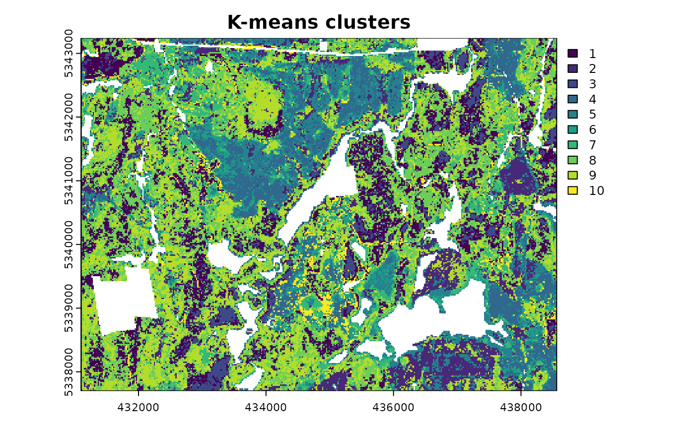
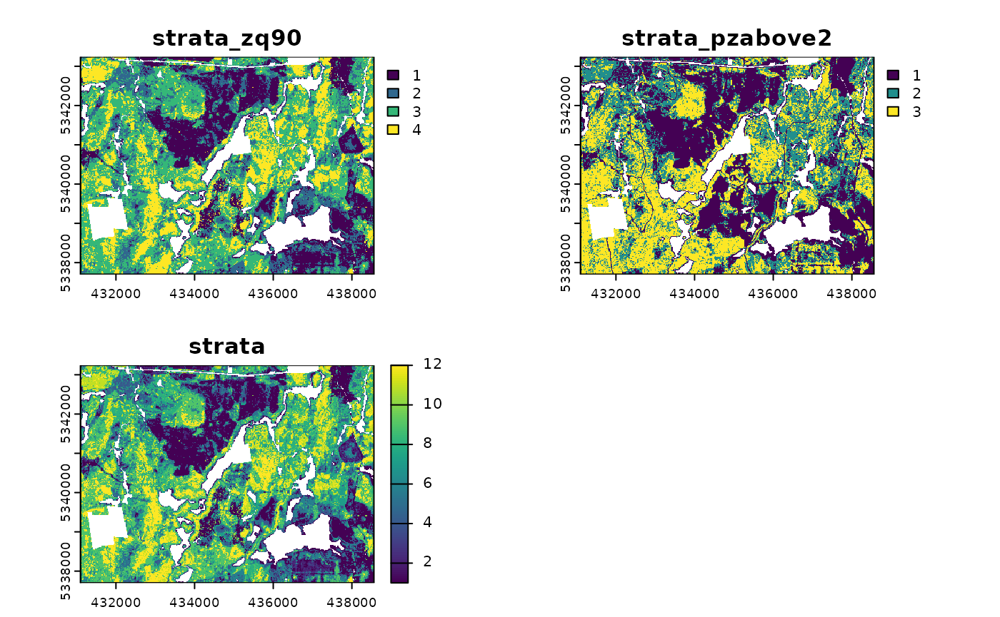
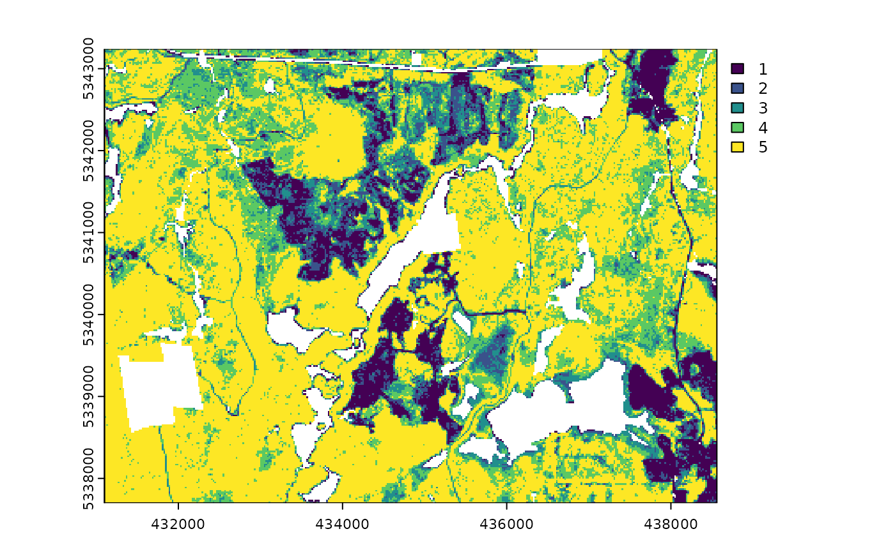
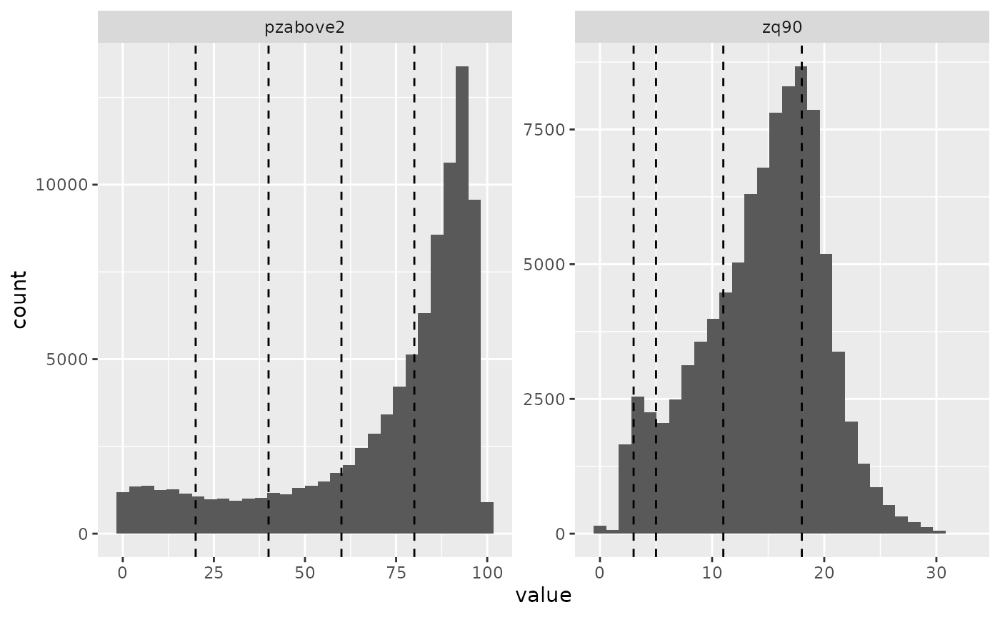
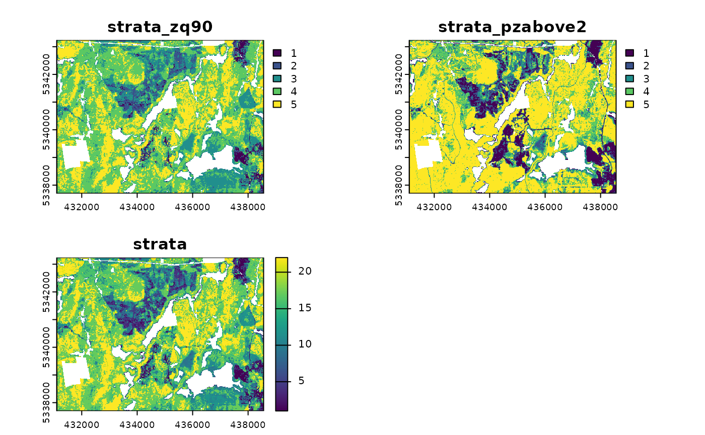
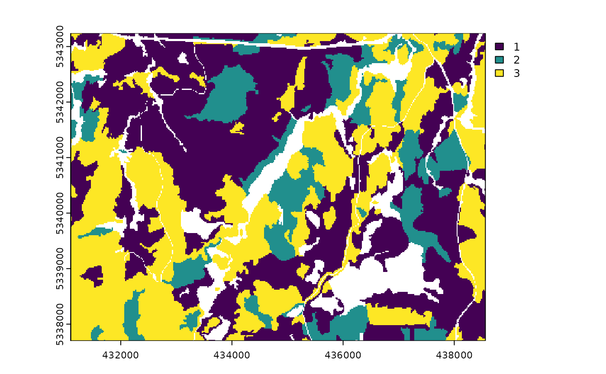
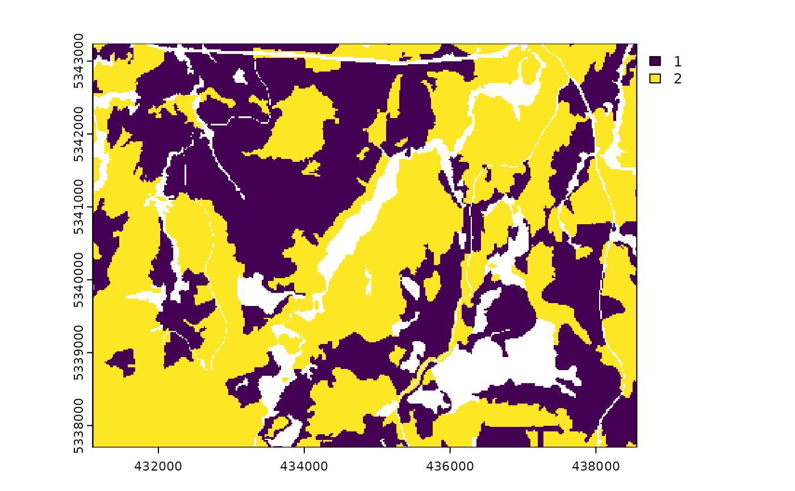
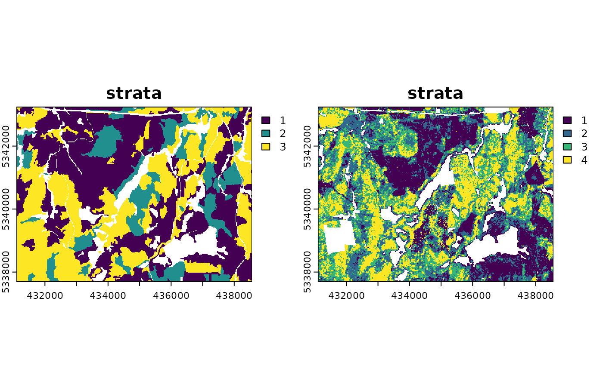
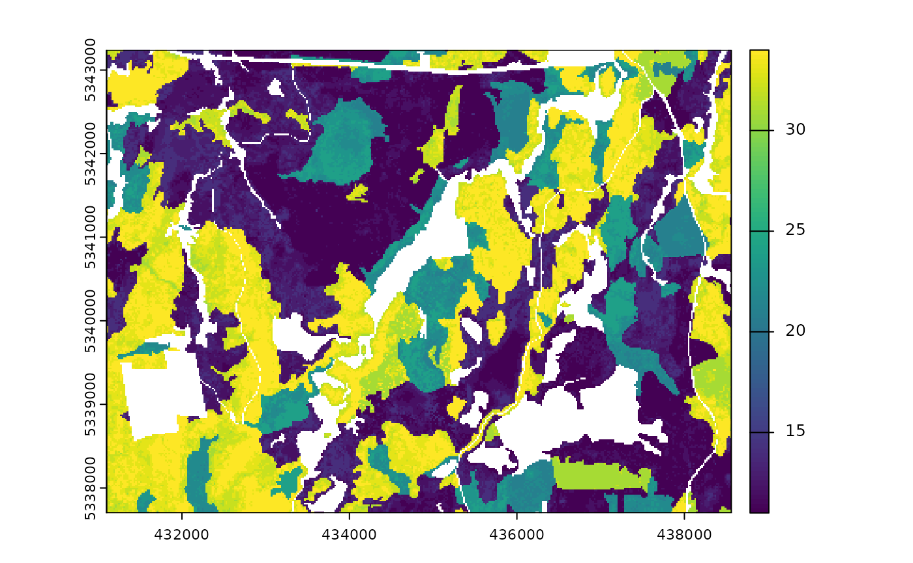
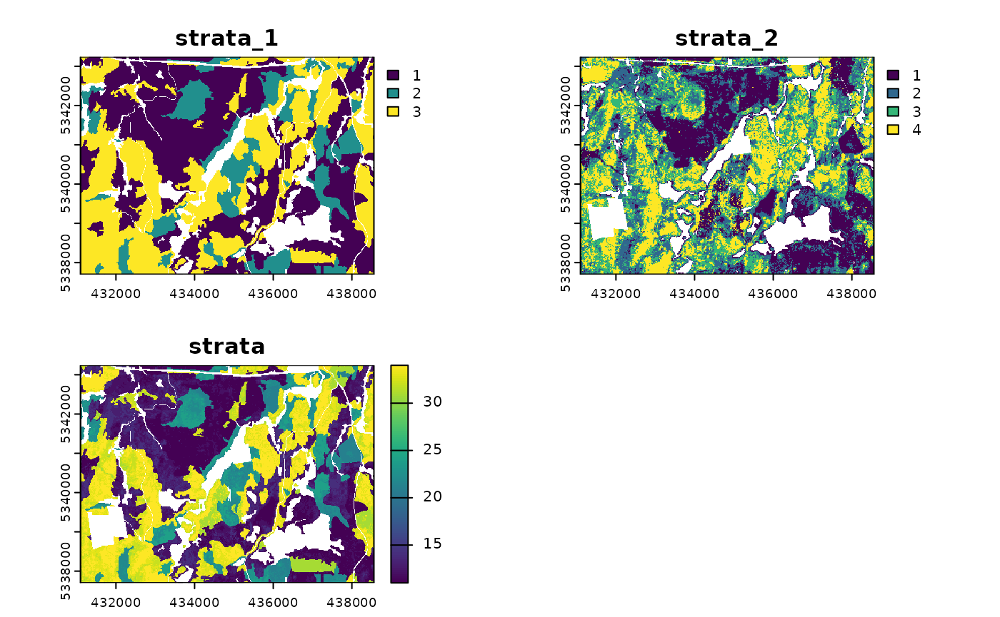

Fundamental to many structurally guided sampling approaches is the use of stratification methods that allow for more effective and representative sampling protocols. It is important to note that the data sets being used as inputs are considered to be populations.
Currently, there are 5 functions associated with the
strat verb in the sgsR package:
| Algorithm | Description | Approach |
|---|---|---|
strat_kmeans() |
kmeans | Unsupervised |
strat_quantiles() |
Quantiles | Either |
strat_breaks() |
User-defined breaks | Supervised |
strat_poly() |
Polygons | Supervised |
strat_map() |
Maps (combines) srasters
|
Unsupervised |
strat_kmeans
strat_kmeans() uses kmeans clustering to produce an
sraster output.
#--- perform stratification using k-means ---#
strat_kmeans(
mraster = mraster, # input
nStrata = 5
) # algorithm will produce 4 strata
#> class : SpatRaster
#> size : 277, 373, 1 (nrow, ncol, nlyr)
#> resolution : 20, 20 (x, y)
#> extent : 431100, 438560, 5337700, 5343240 (xmin, xmax, ymin, ymax)
#> coord. ref. : UTM Zone 17, Northern Hemisphere
#> source(s) : memory
#> varname : mraster
#> name : strata
#> min value : 1
#> max value : 5TIP!
plot = FALSE is the default for all functions.
plot = TRUE will visualize raster and vector ouputs.
strat_kmeans(
mraster = mraster, # input
nStrata = 10, # algorithm will produce 10 strata
iter = 1000, # set minimum number of iterations to determine kmeans centers
algorithm = "MacQueen", # use MacQueen algorithm
plot = TRUE
) # plot output
#> class : SpatRaster
#> size : 277, 373, 1 (nrow, ncol, nlyr)
#> resolution : 20, 20 (x, y)
#> extent : 431100, 438560, 5337700, 5343240 (xmin, xmax, ymin, ymax)
#> coord. ref. : UTM Zone 17, Northern Hemisphere
#> source(s) : memory
#> varname : mraster
#> name : strata
#> min value : 1
#> max value : 10
strat_quantiles
The strat_quantiles() algorithm divides data into
equally sized strata (nStrata). Similar to
strat_breaks(), this function is vectorized to allow users
to input any number of metrics to stratify (mraster) so
long as nStrata is a list containing a matching number of
numeric objects. nStrata can be either nStrata
can be either a scalar integer representing the number of desired output
strata, or a numeric vector of probabilities between 0-1 demarcating
quantile break points. The nStrata list can be a mix of
these (e.g. nStrata = list(c(0.1,0.8,1), 4, 9) where
mraster would have 3 layers) to allow users to define both
explicit quantile breaks or a desired strata number that is converted to
quantiles breaks internally. Specifying map = TRUE will
combine (map) stratifications of all input mraster layers
to produce a combined stratified output.
#--- perform quantiles stratification ---#
strat_quantiles(
mraster = mraster$zq90,
nStrata = 6,
plot = TRUE
)

#> class : SpatRaster
#> size : 277, 373, 1 (nrow, ncol, nlyr)
#> resolution : 20, 20 (x, y)
#> extent : 431100, 438560, 5337700, 5343240 (xmin, xmax, ymin, ymax)
#> coord. ref. : UTM Zone 17, Northern Hemisphere
#> source(s) : memory
#> varname : mraster
#> name : strata
#> min value : 1
#> max value : 6
#--- vectorized ---#
strat_quantiles(
mraster = mraster[[1:2]], # two metric layers
nStrata = list(c(0.2, 0.4, 0.8), 3), # list with two objects - 1 probability breaks, 1 scalar integer
plot = TRUE, # plot output srasters
map = TRUE
) # combine stratifications to a mapped output
#> class : SpatRaster
#> size : 277, 373, 3 (nrow, ncol, nlyr)
#> resolution : 20, 20 (x, y)
#> extent : 431100, 438560, 5337700, 5343240 (xmin, xmax, ymin, ymax)
#> coord. ref. : UTM Zone 17, Northern Hemisphere
#> source(s) : memory
#> varnames : mraster
#> mraster
#> mraster
#> names : strata_zq90, strata_pzabove2, strata
#> min values : 1, 1, 1
#> max values : 4, 3, 12
strat_breaks
strat_breaks() stratifies data based on user-defined
breaks in mraster. This algorithm is vectorized. The user
can provide an mraster with as many layers as they wish as
long as the breaks parameters is a list of equal length
comprised of numeric vectors. Like strat_quantiles() this
function has the map parameter to combine input
stratifications to generate a mapped output.
#--- perform stratification using user-defined breaks ---#
#--- define breaks for metric ---#
br.pz2 <- c(20, 40, 60, 80)
br.pz2
#> [1] 20 40 60 80
#--- perform stratification using user-defined breaks ---#
#--- define breaks for metric ---#
br.zq90 <- c(3, 5, 11, 18)
br.zq90
#> [1] 3 5 11 18Once the breaks are created, we can use them as input into the
strat_breaks() function using the breaks
parameter.
#--- stratify on 1 metric only ---#
strat_breaks(
mraster = mraster$pzabove2, # single raster
breaks = br.pz2, # single set of breaks
plot = TRUE
) # plot output
#> class : SpatRaster
#> size : 277, 373, 1 (nrow, ncol, nlyr)
#> resolution : 20, 20 (x, y)
#> extent : 431100, 438560, 5337700, 5343240 (xmin, xmax, ymin, ymax)
#> coord. ref. : UTM Zone 17, Northern Hemisphere
#> source(s) : memory
#> varname : mraster
#> name : strata
#> min value : 1
#> max value : 5
#--- vectorized ---#
strat_breaks(
mraster = mraster[[1:2]], # two metrics
breaks = list(br.zq90, br.pz2), # list of two breaks vectors
map = TRUE, # map final output
plot = TRUE
) # plot outputs
#> class : SpatRaster
#> size : 277, 373, 3 (nrow, ncol, nlyr)
#> resolution : 20, 20 (x, y)
#> extent : 431100, 438560, 5337700, 5343240 (xmin, xmax, ymin, ymax)
#> coord. ref. : UTM Zone 17, Northern Hemisphere
#> source(s) : memory
#> varnames : mraster
#> mraster
#> mraster
#> names : strata_zq90, strata_pzabove2, strata
#> min values : 1, 1, 1
#> max values : 5, 5, 22
strat_poly
Forest inventories with polygon coverages summarizing forest
attributes such as species, management type, or photo-interpreted
estimates of volume can be stratified using
strat_poly().
TIP!
Users may wish to stratify based on categorical or empirical variables that are not available through raster data (e.g. species from forest inventory polygons).
Users define the input poly and its associated
attribute. A raster layer must be defined to
guide the spatial extent and resolution for the output stratification
polygon. Based on the vector or list of features,
stratification is applied and the polygon is rasterized into its
appropriate strata.
#--- load in polygon coverage ---#
poly <- system.file("extdata", "inventory_polygons.shp", package = "sgsR")
fri <- sf::st_read(poly)
#> Reading layer `inventory_polygons' from data source
#> `/home/runner/work/_temp/Library/sgsR/extdata/inventory_polygons.shp'
#> using driver `ESRI Shapefile'
#> Simple feature collection with 632 features and 3 fields
#> Geometry type: MULTIPOLYGON
#> Dimension: XY
#> Bounding box: xmin: 431100 ymin: 5337700 xmax: 438560 ymax: 5343240
#> Projected CRS: UTM_Zone_17_Northern_Hemisphere
#--- specify polygon attribute to stratify ---#
attribute <- "NUTRIENTS"
#--- specify features within attribute & how they should be grouped ---#
#--- as a single vector ---#
features <- c("poor", "rich", "medium")In our example, attribute = "NUTRIENTS" and features
within, c("poor", "rich", "medium"), define the 3 desired
strata.
#--- stratify polygon coverage ---#
srasterpoly <- strat_poly(
poly = fri, # input polygon
attribute = attribute, # attribute to stratify by
features = features, # features within attribute
raster = sraster, # raster to define extent and resolution for output
plot = TRUE
) # plot output
features can be grouped. In our example below,
rich and medium features are combined into a
single strata, while low is left in isolation. The 2
vectors are specified into a list, which will result in the output of 2
strata (low & rich/medium).
#--- or as multiple lists ---#
g1 <- "poor"
g2 <- c("rich", "medium")
features <- list(g1, g2)
strat_poly(
poly = fri,
attribute = attribute,
features = features,
raster = sraster,
plot = TRUE,
details = TRUE
)
#> $raster
#> class : SpatRaster
#> size : 277, 373, 1 (nrow, ncol, nlyr)
#> resolution : 20, 20 (x, y)
#> extent : 431100, 438560, 5337700, 5343240 (xmin, xmax, ymin, ymax)
#> coord. ref. : UTM Zone 17, Northern Hemisphere
#> source(s) : memory
#> varname : mraster
#> name : strata
#> min value : 1
#> max value : 2
#>
#> $lookUp
#> strata features
#> 1 1 poor
#> 2 2 rich
#> 3 2 medium
#>
#> $poly
#> class : SpatVector
#> geometry : polygons
#> dimensions : 524, 2 (geometries, attributes)
#> extent : 431100, 438560, 5337700, 5343240 (xmin, xmax, ymin, ymax)
#> coord. ref. : UTM_Zone_17_Northern_Hemisphere
#> names : features strata
#> type : <chr> <int>
#> values : poor 1
#> poor 1
#> poor 1details
details returns the output outRaster, the
stratification $lookUp table, and the polygon
($poly) used to drive the stratification based on
attributes and features specified by the users.
strat_map
Users may wish to pair stratifications. strat_map()
facilitates vectorized mapping of sraster layers to
generate a unique mapped strata output based on stratum pairings. The
stack parameter will output a multilayer
sraster with the inputs
(strata_1, strata_2 ...) and mapped output
(strata).
This facilitates the user to generate stratifications detailing quantitative and qualitative measures such as structure by species, or multiple qualitative measures such as species by management type.

#--- map srasters ---#
strat_map(
sraster = srasters, # two layer sraster
plot = TRUE
)
#> class : SpatRaster
#> size : 277, 373, 1 (nrow, ncol, nlyr)
#> resolution : 20, 20 (x, y)
#> extent : 431100, 438560, 5337700, 5343240 (xmin, xmax, ymin, ymax)
#> coord. ref. : UTM Zone 17, Northern Hemisphere
#> source(s) : memory
#> varname : mraster
#> name : strata
#> min value : 11
#> max value : 34The convention for the numeric value of the output strata is the
concatenation (merging) of sraster layers. Check
$lookUP for a clear depiction of this step.
strat_map(
sraster = srasters, # input with 2 sraster layers
stack = TRUE, # output stacked input (strata_1, strata_2) and output (strata) layers
details = TRUE, # provide additional details
plot = TRUE
) # plot output
#> Stacking srasters and their combination (strata).
#> $raster
#> class : SpatRaster
#> size : 277, 373, 3 (nrow, ncol, nlyr)
#> resolution : 20, 20 (x, y)
#> extent : 431100, 438560, 5337700, 5343240 (xmin, xmax, ymin, ymax)
#> coord. ref. : UTM Zone 17, Northern Hemisphere
#> source(s) : memory
#> varnames : mraster
#> mraster
#> mraster
#> names : strata_1, strata_2, strata
#> min values : 1, 1, 11
#> max values : 3, 4, 34
#>
#> $lookUp
#> strata_1 strata_2 strata
#> 1 1 1 11
#> 2 1 2 12
#> 3 1 3 13
#> 4 1 4 14
#> 5 2 1 21
#> 6 2 2 22
#> 7 2 3 23
#> 8 2 4 24
#> 9 3 1 31
#> 10 3 2 32
#> 11 3 3 33
#> 12 3 4 34